14 张静态表情 · 实际 240px 显示 · 猫猫和文字均有白色描边
背景仅供预览，PNG 文件保留真实透明通道。GIF 是单帧兼容格式。技术检查、视觉复核与平台审核分别记录。
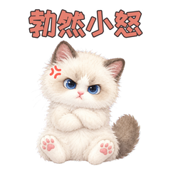
01 · 勃然小怒
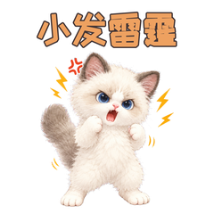
02 · 小发雷霆
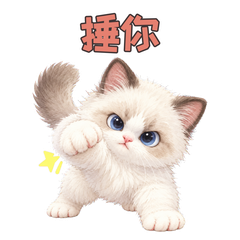
03 · 捶你
04 · 困了
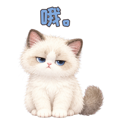
05 · 哦。
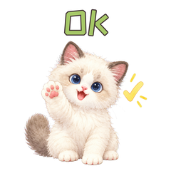
06 · OK
07 · 笑
08 · kiss
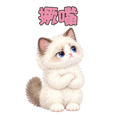
09 · 撅嘴
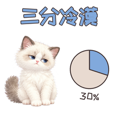
10 · 三分冷漠
11 · 炸弹
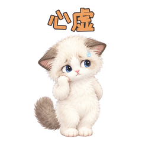
12 · 心虚
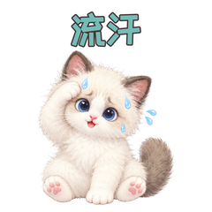
13 · 流汗
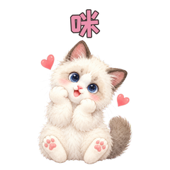
14 · 咪
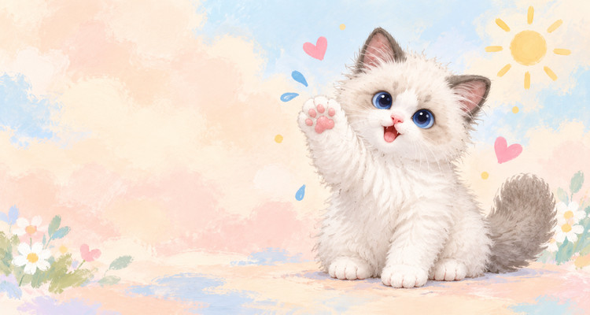
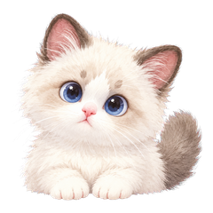
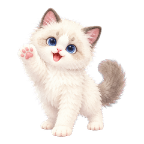